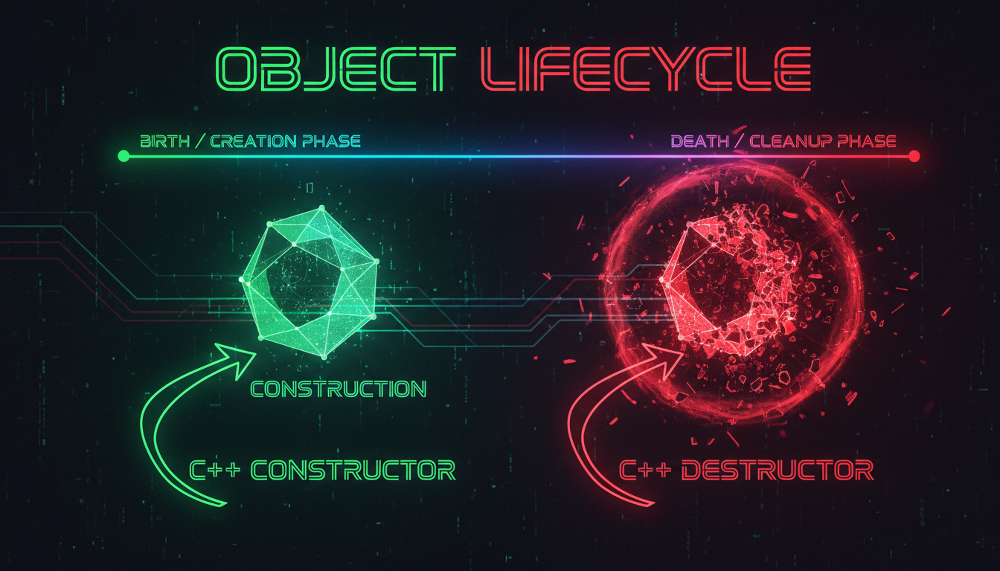

Конструктори, ініціалізація, деструктор, RAII

Конструктор — це спеціальний метод, що викликається автоматично при створенні об'єкта. Він має те саме ім'я, що й клас, і не має типу повернення.
#include <iostream>
#include <string>
class Student {
private:
std::string name;
int age;
double gpa;
public:
// Конструктор за замовчуванням
Student() {
name = "Unknown";
age = 0;
gpa = 0.0;
std::cout << "Викликано конструктор за замовчуванням" << std::endl;
}
// Параметризований конструктор
Student(std::string n, int a, double g) {
name = n;
age = a;
gpa = g;
std::cout << "Викликано параметризований конструктор" << std::endl;
}
// Спискова ініціалізація (кращий спосіб)
Student(std::string n, int a, double g) : name(n), age(a), gpa(g) {
std::cout << "Конструктор зі списковою ініціалізацією" << std::endl;
}
// Деструктор
~Student() {
std::cout << "Деструктор для " << name << std::endl;
}
void display() const {
std::cout << name << ", " << age << " років, GPA: " << gpa << std::endl;
}
};
int main() {
Student s1; // Конструктор за замовчуванням
Student s2("Ivan", 20, 4.5); // Параметризований
Student s3 = Student("Maria", 19, 4.8); // Явний виклик
s1.display();
s2.display();
s3.display();
// Деструктори викликаються автоматично
return 0;
}